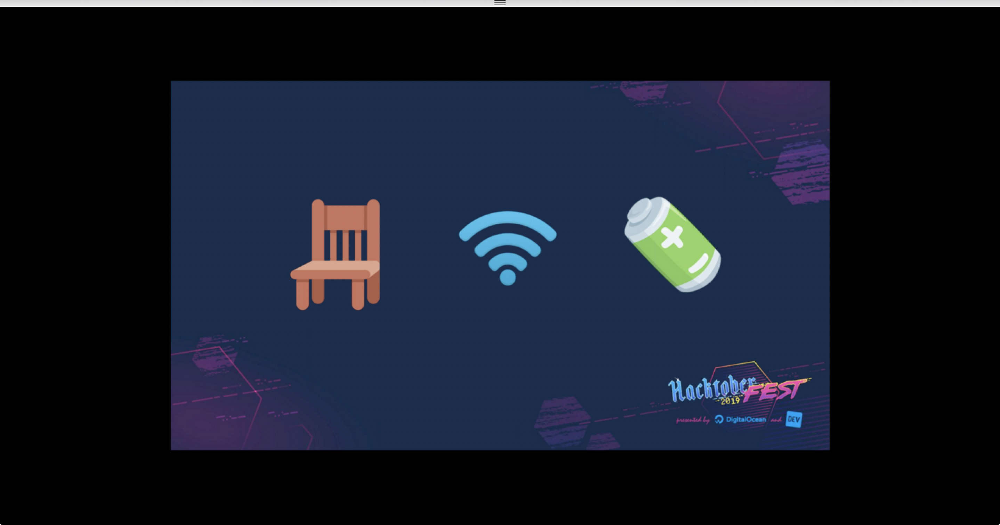
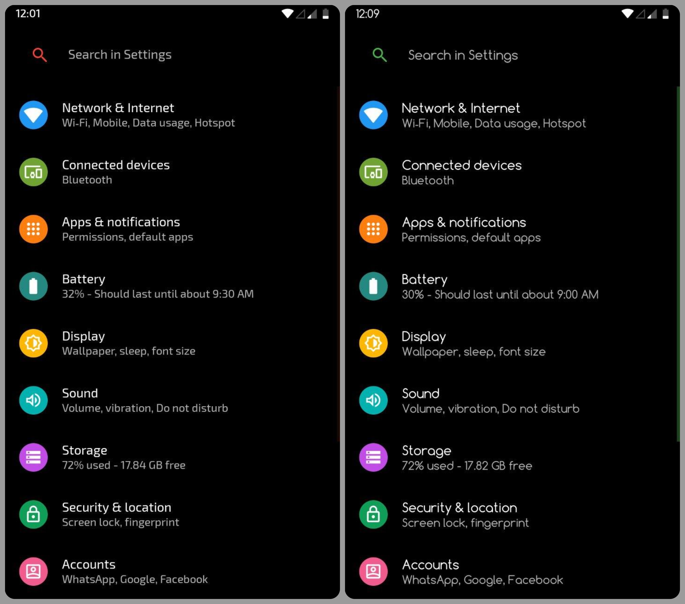
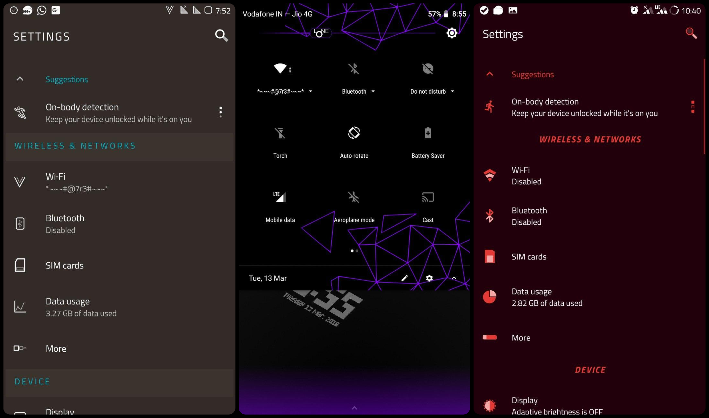
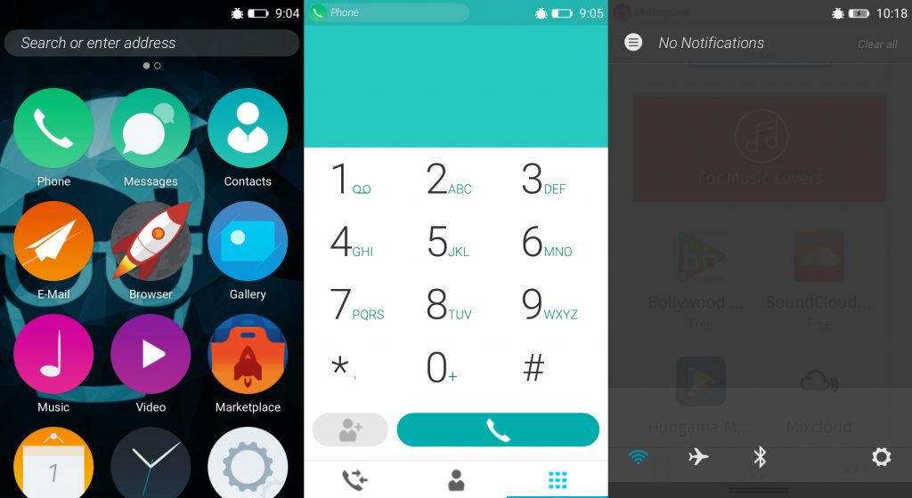

Hacktoberfest® is open to everyone in our global community. Whether you’re a developer, student learning to code, event host, or company of any size, you can help drive growth of open source and make positive contributions to an ever-growing community. All backgrounds and skill levels are encouraged to complete the challenge.
Hacktoberfest is open to everyone in our global community!
Pull requests can be made in any GitHub-hosted repositories/projects.
Sign up anytime between October 1 and October 31. link
Rules
To qualify for the official limited edition Hacktoberfest shirt, you must register and make four pull requests (PRs) between October 1-31 (in any time zone). PRs can be made to any public repo on GitHub, not only the ones with issues labeled Hacktoberfest. If a maintainer reports your pull request as spam or behavior not in line with the project’s code of conduct, you will be ineligible to participate. This year, the first 50,000 participants who successfully complete the challenge will earn a T-shirt.
Getting started with Hacktoberfest
Hacktoberfest is for -
Beginners
Maintainers
Event organizers
& Companies
That's all you need :

and 3. Knowledge (How i can found/start a better project/ information about a project)
Motivatoin for OSSC (open source software contributions)
Learn New Think
Compare + Collaboration With Other developer/team through out the world
Learn better technque (Clean Code :P)
Knowledge about new technology
Sefl Satisfaction
Free Swag :P :P :P
The following resources share repositories that curate tasks for beginners
Our hope is that, by open sourcing this configurable platform, developers will continue to expand on this system by adding new user interfaces, new sensing modalities, word prediction and many other features.
This project aims to create a research-validated stethoscope whose plans are available freely and openly. The goal is for the bell to cost ~USD$1-2 to produce...
Open Source creates $1.7 Trillion for the economy
of which 50% is created by the community
But we consume less than 0.02% of the value we create.
AI
Artificial Intelligence
PyTorch

CNTK
Changing the System Fonts

Theming your Device
Make an Android truly yours

Custom ROMs
Where it all started
LineageOS 16.0
 RRO | OMS
RRO | OMS
A strong foundation of Android Theming
Firefox OS (formerly Boot2Gecko)

What is a version control system ?
A system that keeps records of your changes
Allows for collaborative development